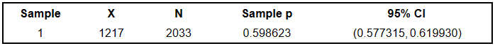
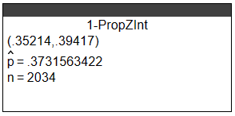
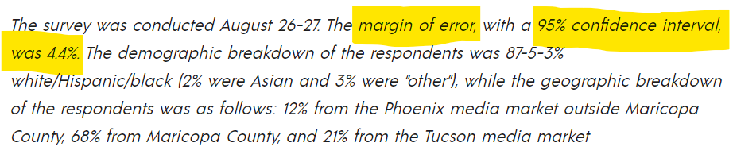
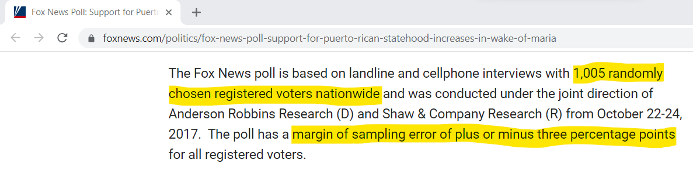

For ACT Students
The ACT is a timed exam...60 questions for 60 minutes
This implies that you have to solve each question in one minute.
Some questions will typically take less than a minute a solve.
Some questions will typically take more than a minute to solve.
The goal is to maximize your time. You use the time saved on those questions you
solved in less than a minute, to solve the questions that will take more than a minute.
So, you should try to solve each question correctly and timely.
So, it is not just solving a question correctly, but solving it correctly on time.
Please ensure you attempt all ACT questions.
There is no negative penalty for any wrong answer.
For NSC Students For the Questions:
Any space included in a number indicates a comma used to separate digits...separating multiples of three digits
from behind.
Any comma included in a number indicates a decimal point. For the Solutions:
Decimals are used appropriately rather than commas
Commas are used to separate digits appropriately.
Solve all questions.
Show all work.
Please Note: Do not round intermediate calculations.
If you must round intermediate calculations, round them to at least four decimal places more than the number of
decimals required for the final answer.
For example; if the final answer requires rounding to 3 decimal places, then round your intermediate
calculations to at least 7 decimal places.
(1.) What does “70% confidence” means in a 70% confidence interval?
70% confidence in a 70% confidence interval means that if 100 different confidence intervals are
constructed, each based on a different sample of size, n from the same population, N;
then it is expected that 70 of the intervals will include the parameter.
(2.) ACT A team of biologists tagged and released 90 deer in a forest.
From the same forest 2 weeks later, the biologists collected a random sample of 30 deer, 5 of
which were tagged.
Let p be the proportion of deer in this forest that are tagged.
What is p̂, the sample proportion, for this sample?
(3.) Naija Polls asked 411 randomly selected adults whether they were thriving, struggling, or
suffering.
294 Nigerians said they were suffering. Round to three decimals as needed.
(a.) Calculate the sample proportion of those who said they were suffering.
(b.) Calculate the 95% confidence interval for the population proportion that said they were suffering.
Interpret your result.
$
x = 294 \\[3ex]
n = 411 \\[3ex]
\hat{p} = \dfrac{x}{n} = \dfrac{294}{411} = 0.7153284672 \\[5ex]
\hat{q} = 1 - \hat{p} \\[3ex]
\hat{q} = 1 - 0.715328 = 0.2846715328 \\[3ex]
For\;\;95\%\;CL,\;\; z_{\dfrac{\alpha}{2}} = 1.96 \\[5ex]
E = z_{\dfrac{\alpha}{2}} * \sqrt{\dfrac{\hat{p} * \hat{q}}{n}} \\[5ex]
E = 1.96 * \sqrt{\dfrac{0.7153284672(0.2846715328)}{411}} \\[5ex]
E = 0.0436274606 \\[3ex]
\hat{p} - E = 0.7153284672 - 0.0436274606 = 0.6717010066 \approx 0.672 \\[3ex]
\hat{p} + E = 0.7153284672 + 0.0436274606 = 0.7589559278 \approx 0.759 \\[3ex]
0.672 \lt p \lt 0.759 \\[3ex]
$
Naija Polls is 95% confident that the population percentage of Nigerians that are suffering is
between 67.2% and 75.9%.
(4.) Given: Lower bound = 0.229; Upper bound = 0.691; sample size = 1000
Determine:
(a.) the point estimate of the population proportion
(b.) the margin of error for the confidence interval and
(c.) the number of individuals in the sample with the specified characteristic for the sample size.
Round to the nearest thousandth as needed.
$
(a.) \\[3ex]
LCL = 0.229 \\[3ex]
UCL = 0.691 \\[3ex]
n = 1000 \\[3ex]
\hat{p} = \dfrac{UCL + LCL}{2} \\[5ex]
\hat{p} = \dfrac{0.691 + 0.229}{2} = \dfrac{0.92}{2} = 0.46 \\[5ex]
(b.) \\[3ex]
E = \dfrac{UCL - LCL}{2} \\[5ex]
E = \dfrac{0.691 - 0.229}{2} = \dfrac{0.462}{2} = 0.231 \\[5ex]
(c.) \\[3ex]
x = \hat{p} * n \\[3ex]
x = 0.46 * 1000 \\[3ex]
x = 460
$
(5.) By how many times does the sample size have to be increased to decrease the margin of error by a
factor of $\dfrac{1}{5}$
$
n = \dfrac{0.25 * \left(z_{\dfrac{\alpha}{2}}\right)^2}{E^2} \\[7ex]
n \propto \dfrac{1}{E^2} \\[5ex]
n = \dfrac{k}{E^2} ...k\;\;is\;\;the\;\;constant\;\;of\;\;proportion \\[5ex]
k = n * E^2 \\[3ex]
\implies \\[3ex]
k = n_1 * E_1^2 = n_2 * E_2^2 \\[3ex]
\implies \\[3ex]
n_1 * E_1^2 = n_2 * E_2^2 \\[3ex]
n_2 * E_2^2 = n_1 * E_1^2 \\[3ex]
But\;\;E_2 = \dfrac{E_1}{5} \\[5ex]
E_2^2 = \left(\dfrac{E_1}{5}\right)^2 \\[5ex]
E_2^2 = \dfrac{E_1^2}{5^2} \\[5ex]
E_2^2 = \dfrac{E_1^2}{25} \\[5ex]
What\;\;is\;\;n_2\;\;in\;\;terms;\;of\;\;n_1? \\[3ex]
\implies \\[3ex]
n_2 * \dfrac{E_1^2}{25} = n_1 * E_1^2 \\[5ex]
n_2 = n_1 * E_1^2 * \dfrac{25}{E_1^2} \\[5ex]
n_2 = n_1 * 25 \\[3ex]
n_2 = 25 * n_1 \\[3ex]
$
The sample size has to be increased by a factor of 25 to decrease the margin of error by a factor of
$\dfrac{1}{5}$
(6.) A survey of 2500 randomly selected Nigerians from the 36 Nigerian States found that 2325 Nigerians
strongly believe their governors and congressmen do not care for the poor.
Determine the best point estimate of the population proportion of Nigerians that has such belief.
Interpret your result.
$
x = 2325 \\[3ex]
n = 2500 \\[3ex]
\hat{p} = \dfrac{x}{n} = \dfrac{2325}{2500} = 0.93 = 93\% \\[5ex]
$
We estimate that 93% of Nigerians strongly believe their governors and congressmen do not care for
the poor.
(7.) A clinical trial tests a method designed to increase the probability of conceiving a girl.
In the study, 380 babies were born.
323 of them were girls.
(a.) Construct a 99% confidence interval estimate of the percentage of girls born.
(b.) Based on your result, does the method appear to be effective?
$
(a.) \\[3ex]
x = 323 \\[3ex]
n = 380 \\[3ex]
\hat{p} = \dfrac{x}{n} = \dfrac{323}{380} = 0.85 \\[5ex]
\hat{q} = 1 - \hat{p} = 1 - 0.85 = 0.15 \\[3ex]
For\;\;99\%\;CL;\;\; z_{\dfrac{\alpha}{2}} = 2.576 \\[5ex]
E = z_{\dfrac{\alpha}{2}} * \sqrt{\dfrac{\hat{p} * \hat{q}}{n}} \\[5ex]
E = 2.576 * \sqrt{\dfrac{0.85 * 0.15}{380}} \\[5ex]
E = 0.0471855643 \\[3ex]
\hat{p} - E = 0.85 - 0.0471855643 = 0.8028144357 \approx 0.803 \\[3ex]
\hat{p} + E = 0.85 + 0.0471855643 = 0.8971855643 \approx 0.897 \\[3ex]
0.803 \lt p \lt 0.897 \\[3ex]
(b.) \\[3ex]
\hat{p} - E \gt 0.5 \\[3ex]
\hat{p} + E \gt 0.5 \\[3ex]
$
Hence, the method appear to be effective because the proportion of girls in both cases is greater
than 0.5 (50%).
(8.) SFP (Samdom For Peace) News conducted a poll of 2001 likely voters just prior to an election.
Nahum Joel and Micah Haggai were the candidates.
Nahum Joel received 48% of the popular vote while Micah Haggai received 46% of the popular vote.
The margin of error was 3%.
SFP News reported that the race was too close to call.
Using the concept of confidence interval, what does it mean to say the race was too close to call?
It is within the margin of error for Nahum Joel to receive between 45% and 51% of the popular vote.
It is also within the margin of error for Micah Haggai to receive between 43% and 49% of the popular
vote.
The two confidence intervals overlap.
Hence, the poll cannot predict the winner. The race is too close to call.
(9.)
(10.)
(11.) A research poll showed that 1217 out of 2033 randomly polled people in a country favor the death
penalty for anyone convicted of murder.
Assume the conditions for the Central Limit Theorem were met.
Using the technology output below:

(a.) Interpret the confidence interval.
(b.) Is it plausible to claim that a majority favor the death penalty? Explain.
(a.) There is 95% confidence that the population proportion favoring the death penalty is between
0.577315 and 0.619930
(b.) Yes, it is a plausible claim because the confidence interval contains values above 50%.
(12.) When asked whether marriage is becoming obsolete, 759 out of 2034 randomly selected adults who
responded to a poll said yes.
Assume the conditions for the Central Limit Theorem were met.
Using the technology output below:

(a.) Report a 95% confidence interval for the proportion.
(b.) Is it plausible to claim that a majority think marriage is becoming obsolete?
(a.) With 95% confidence, the population proportion of people who think marriage is becoming
obsolete is between 0.35214 and 0.39417
(b.) No, it is not a plausible claim because the confidence interval does not contain values above
50%.
(13.)
(14.)
(15.) According to a poll, 724 out of 1067 randomly selected adults living in a certain country felt
the laws covering the sale of firearms should be stricter.
(a.) What is the value of p̂, the sample proportion who favor stricter gun laws?
(b.) Check the conditions to determine whether the Central Limit Theorem can be used to find a
confidence interval.
(c.) Find a 95% confidence interval for the population proportion who favor stricter gun laws.
(d.) Based on your confidence interval, do a majority of adults in the country favor stricter gun
laws?
$
(a.) \\[3ex]
x = 724 \\[3ex]
n = 1067 \\[3ex]
\hat{p} = \dfrac{x}{n} \\[5ex]
\hat{p} = \dfrac{724}{1067} \\[5ex]
\hat{p} = 0.6785379569 \\[3ex]
$
The proportion of the randomly selected adults who favor stricter gun laws is 0.6785379569 or
67.85379569%
(b.) Verify the conditions for using the Central Limit Theorem to find a confidence interval
(I.) Condition 1: Simple Random Sample.
724 out of 1067 randomly selected adults... verified
(II.) Condition 2: Independent Trials.
We do not know the population size.
The Independent Trials condition can reasonably be assumed to hold.
(III.) Condition 3: Large Sample Size
$
n = 1067 \\[3ex]
\hat{p} = 0.6785379569 \\[3ex]
n * \hat{p} = 1067(0.6785379569) = 724 \ge 10 \\[3ex]
\hat{q} = 1 - \hat{p} \\[3ex]
\hat{q} = 1 - 0.6785379569 \\[3ex]
\hat{q} = 0.3214620431 \\[3ex]
n * \hat{q} = 1067(0.3214620431) = 343 \ge 10 \\[3ex]
$
There are at least ten successes and at least ten failures... verified
$
(c.) \\[3ex]
For\;\;95\%\;CL,\;\; z_{\dfrac{\alpha}{2}} = 1.96 \\[5ex]
E = z_{\dfrac{\alpha}{2}} * \sqrt{\dfrac{\hat{p} * \hat{q}}{n}} \\[5ex]
E = 1.96 * \sqrt{\dfrac{0.6785379569(0.3214620431)}{1067}} \\[5ex]
E = 0.02802372 \\[3ex]
\hat{p} - E = 0.6785379569 - 0.02802372 = 0.6505142369 \approx 0.651 \gt 0.5 \\[3ex]
\hat{p} + E = 0.6785379569 + 0.02802372 = 0.7065616769 \approx 0.707 \gt 0.5 \\[3ex]
0.651 \lt p \lt 0.707 \\[3ex]
$
The 95% confidence interval for the population proportion who favor stricter gun laws is (0.651,
0.707)
(d.) Because the confidence interval only includes values greater than 50%, a majority of adults in
the country favor stricter gun laws.
(16.)
(17.)
(18.)
(19.) Please review the poll information from
People’s Pundit Daily
and note the three statistics (highlighted):

(a.) Given the margin of error and the confidence level, justify the sample size.
(b.) Interpret the result of the poll.
$
(a.) \\[3ex]
CL = 95\% = 0.95 \\[3ex]
E = \pm 4.4\% = 0.044 \\[3ex]
\alpha = 1 - CL \\[3ex]
\alpha = 1 - 0.95 = 0.05 \\[3ex]
z_{\dfrac{\alpha}{2}} = 1.96 \\[5ex]
n = \dfrac{0.25 * \left(z_{\dfrac{\alpha}{2}}\right)^2}{E^2} \\[7ex]
n = \dfrac{0.25 * 1.96^2}{0.044^2} \\[5ex]
n = \dfrac{0.9604}{0.001936} \\[5ex]
n = 496.0743802 \\[3ex]
n \approx 497...round\;\;up\;\;human\;\;beings \\[3ex]
$
The minimum sample size required, for a margin or error of ± 4.4 percentage points and a
95% confidence level is 497 voters.
500 voters were used. So, it is in order because 500 is greater than 497.
(b.) Dr. Kelli Ward holds a big 47% to 21% lead over incumbent Sen. Jeff Flake for the U.S. Senate
in a new poll of the Republican primary voters in Arizona.
The survey was conducted August 26-27. The margin of error, with a 95% confidence interval, was
4.4%.
47% − 4.4% = 42.6%
47% + 4.4% = 51.4%
There is 95% confidence that the proportion of Arizona Republican registered primary voters prefer
Dr. Kelli Ward to incumbent Senator Jeff Flake is between 42.6% and 51.4%.
(20.) Please review the poll information from
Fox News
and note the statistics (highlighted):

(a.) Fox News did not specify the confidence level (if you read the entire information, they did not;
but they should have specified it).
Be it as it may, considering the common confidence levels, what confidence level do you think the survey
was taken, based on the minimum sample size?
(b.) Interpret the result of the poll.
(c.) Assume the minimum sample size to be the actual sample size.
Determine the confidence level for that size.